SAFARI
Users
- Equipment
- Scaling & Cleaning a Deep Bodied Fish
- Filleting a Deep Bodied Fish
- Skinning a Deep Bodied Fish
- Fish Soup Stock - using the off-cuts
Equipment
|
|
Naturally, the right tools make a complex job like preparing fish much easier. In the photos to the left are all the tools I use for the job. You may already have some of them.
|


Scaling & Cleaning
Here in Southern California, where Asian fish markets abound, any decent market will scale and clean the fish for you at no charge - but some fish sold at an unusually low price are marked, "not cut, no clean" - so it's up to you.
The main difference between a deep bodied fish is that you can't make a cut from vent to under the jaw because the whole bottom of the fish is a hard keel (though some deep fish, like Tilapia, have no keel and are treated the same as round fish).
For our example we'll use a Pompano but any fish of this general shape will be pretty much the same. On our Varieties of Fish page (very large page) there is a link to a "Prep and Cooking" page for each variety of fish. These pages have notes on the exact handling of particular fish.
Important:
when filleting fish you need to have your sharpening stone ready and know how to use it. Fish fillet knives get dull quickly because their razor edge is scraping along hard bones. If you find any reluctance slicing through skin, time to sharpen.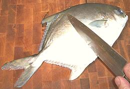 First scale the fish. Not all fish have scales but kosher fish need at least a few. The pompano pictured has only a few small scales which are easy to scrape off without making a mess. Be particularly careful to remove all scales from along the fins and the collar because you're going to have to make cuts there.
Pros use a fish scaling tool (concentric toothed rings) on some fish and a very coarse stainless steel scouring pad for others, but for home use the back of your kitchen knife will do fine. This is the messy part as scales will be flying about, so you might want to do the scaling outdoors.
Some fish are much harder to scale than others. In some cases you
have to pull some of the scales off with needle nose pliers, in others
you have to shave some of the scales off with the sharp edge of the
knife. For one very soft fish I found a grapefruit spoon worked well.
ONLY IF
you are going to cook the fish "head on, follow these next few steps for cleaning. If you aren't, just skip down to Filleting where we start by cutting off the head.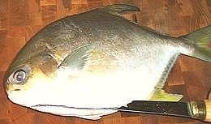
Some deep bodied fish can be cut in the center like a round fish but many
have a hard keel running almost the full length. For these you have to
cut in from the side. Pick the best looking side and make the cut on the
other side. The cut should start under the jaw and go no farther aft than
the end of the body cavity.
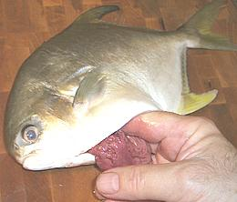 Now reach up into the fish and warp your fingers around the innards and pull them down and out. For some deep bodied fish the cavity is so short and high you'll only be able to get one or two fingers in there. If necessary use a spoon to assist.
You may need to go in with your kitchen shears to cut the esophagus
which can be pretty tough on some fish.
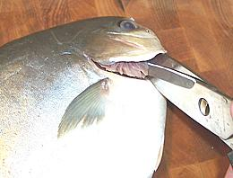 Next pull out the gill arches. For some deep bodied fish the gill slits are so small you can't get a good grip and need to cut the arches loose at both ends with kitchen shears. You may even have to use long nosed pliers to pull them out.
Above and behind the gills you will find the heart and other blood
works. Scrape everything out and rinse with cold running water. You
should end up with a nice clean empty fish. There should be nothing
blocking the opening between the body cavity and the head, and the
backbone should be exposed.
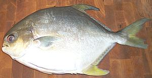
We now have a nice looking whole fish ready to cook. Turn the slit side down
in the steamer or baking dish when you cook it.
Filleting
We'll start over from the point right after scaling because most of the instructions above apply only if you're NOT going to fillet the fish.
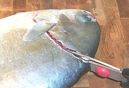 First make the usual cuts around the collar to free the head. Tilt the knife in under the collar to get as much of the flesh as possible. Then use your kitchen shears to sever the backbone. You can go in from the top as shown or from the side if that is more convenient or would keep more flesh on the fillets.
Once the head is removed it'll be very easy to scrape all the innards
out of the fully exposed body cavity (see instructions above). If you
intend to use the head for soup stock it'll also be easy to cut the gills
out of it. Just cut under the chin and hinge the collar back, remove the
gills and scrape out all the other gooies.
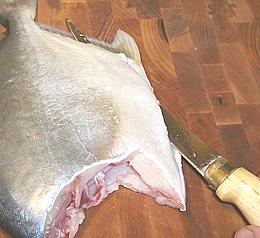
Make a cut across the tail and then one up from the bottom on each side
of the anal fin, all the way from the cut you made across the tail into
the body cavity. This cut doesn't have to be real deep, but it does have
to cut through the skin and a bit up the fin rays to free the fillet.
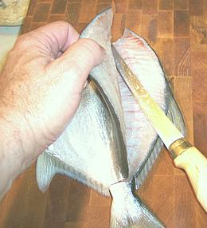
Make a cut from the top to the backbone moving from head to tail. have the
blade following against the fin rays until it can pick up the skeletal
bones and follow those all the way to the backbone. Lead with the length
of the blade rather than the tip because following the bones is easier
that way.
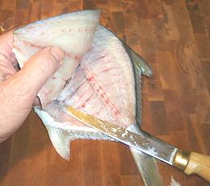
Cut the fillet free from the tail. Then from just behind the rib cage dip
over the spine and cut cut downward until you meet the cut you already
made from the bottom. This should have freed the fillet everywhere except
the rib cage.
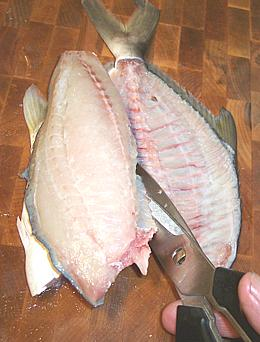
For some fish you can just follow the rib bones down but for many fish
this is difficult to do without leaving a lot of flesh or accidentally
cutting off the skirt. On some fish you don't care because the
skirt is little more than skin but on other fish it's quite fleshy. I
recommend just cutting the ribs away from the backbone and dealing with
them after the fillet is removed from the fish.
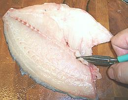 Now you have a fillet separated from the fish. Use long nose pliers to pull out any remaining ribs. Start at the back and hold the flesh with a finger on each side of the rib as you pull it diagonally toward the top front.
Feel down the centerline and in most fish you'll feel a row of pin
bones. These usually only need to be pulled for the first 1/3 of the fish
because they get progressively softer. Use long nose pliers and pull them
straight forward. This is too tedious for commercial operations, so they
either use a "J" cut (wasteful) or a very precise "V" cut to remove the
pin bones.
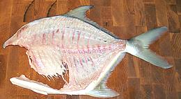
Now you are ready to do the same on the other side. You should end up with
two nice fillets and a fish with very little flesh left on it - a
"see through" skeleton. Feel around one last time for any bones that
have escaped, particularly along the cut where the head was. Pull any
you find with the long nose pliers.
Skinning Fish
With many fish you're going to want to skin the fillets, either because the skin shrinks badly and will curl or tear the fillets, or because it's a delicate flavored fish and the flavor of the skin is too strong. With a few fish you can practically just pull the skin off, but for most the skin is too delicate, adheres too well, or both.
Note:
The example fish is fairly small, but if it is much wider, consider cutting it in half lengthwise at the centerline to make skinning easier.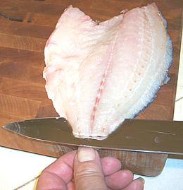 You'll need a flat cutting board and a very sharp knife with a long straight blade. I find my 8 inch turkey slicing knife is excellent for this purpose. Our demo fish is the same Pompano used for the cleaning and fillet sections above.
Start skin side down with the fillet lined up along the edge of the board
so the knife has flat access for the full length. Have the tail end just a
little over the edge of your cutting board so you can bend it down and get a
straight start with the knife blade. At this point you can see what you're
doing and if you're down to the skin and not through it.
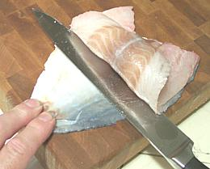 Once you're started you're going to be running blind. The fillet isn't going to curl up as shown in the photo, that was done just to show you what is going on. Once you've started you can move your fingers up onto the board to get a better grip.
Holding the skin tightly to the board, keep the sharp edge of the blade
turned just vaguely downward toward the skin and run it forward using just a
tiny bit of sawing motion if you need to. Don't turn the blade too far down
or you'll cut through the skin or at all up or you'll be taking flesh with
the skin. When it's going just right the blade has sort of a sizzling sound
and feel.
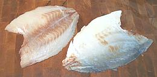 You should now have a skin with practically no flesh and a nice clean fillet with no skin. If your fillet has some of the silver inner lining of the skin on it, don't worry about it. If you've broken through the skin and have patches of whole skin on the fillet, they're going to be difficult to remove (use the tip of your filleting knife) so think hard whether you can tolerate a bit of skin before you try.
For some fish it's fine to toss the skins into the pot with the head,
bones and fins for making fish stock for soups, chowders and stews. For
other fish, the skin is too strong or bitter in flavor. In Southeast
Asia Snakehead skins are sold separately
for use in making soup stock. I tried it and wasn't that impressed.
Fish Soup Stock
We have a separate page for Making Fish Stock.